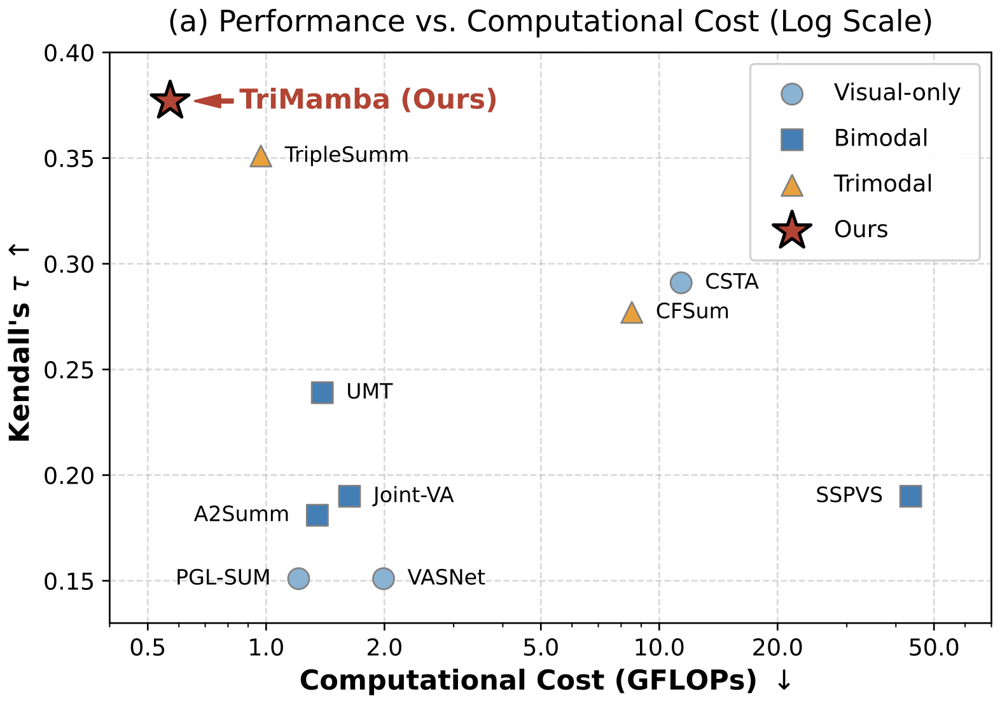
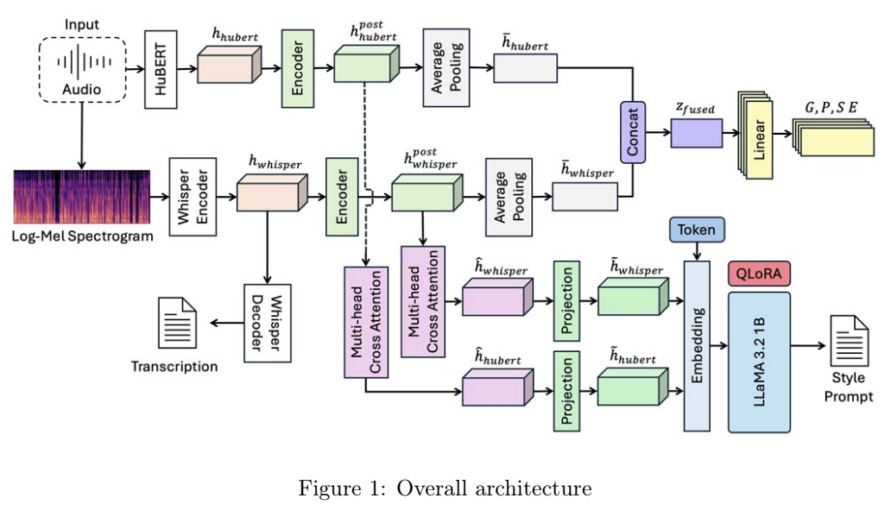

Research
I am currently exploring various tasks in Video Understanding and Multimodal Learning.
|
News
No news yet. Stay tuned!
|
Publications

TriMamba: Tri-Modal Fusion and Bidirectional Mamba for Video Summarization
Junyoung Kim
Under Review

Paralinguistic Acoustic Feature to Natural Language Prompt Conversion using Hybrid Transformer-LLaMA Architecture
Junyoung Kim, Ahyoung Choi
Under review
|
Awards
Minister of Science and ICT Award
2025 Autonomous Driving AI Challenge, Top 1
Developed a deep learning model that can detect pedestrians, cars, and cyclists from 64-channel and 128-channel LiDAR data.
Ministry of Science and ICT, Nov 2025
Minister of Employment and Labor Award
LG Aimers 6th AI Hackathon, Top 1 out of 1569 Teams
Ranked first on the leaderboard using solely deep learning models on structured data. Applied SAM Optimizer, F1 Loss, Weighted Brier Loss, Multi-task Learning, and Feature Embedding.
LG AI Research, Apr 2025
Minister of Science and ICT Award
2024 Autonomous Driving AI Challenge: Vehicle-based 3D Object Detection, Top 1
Developed a deep learning model that can detect pedestrians, cars, and cyclists from 64-channel and 128-channel LiDAR data.
Ministry of Science and ICT, Nov 2024
IITP President Award
2024 Autonomous Driving AI Challenge: Infra-based 3D Object Detection, Top 1
Developed a deep learning model that can detect pedestrians, cars, and cyclists from 32-channel LiDAR data.
Ministry of Science and ICT, Nov 2024
UNIST President Award
2022 6th Supercomputing Youth Camp, Top 1
Completed two intensive tasks: parallelizing specific code for maximum efficiency and developing a model to detect mask usage.
UNIST, Jul 2022
Encouragement Award
2026 Nuclear Energy AI Bootcamp Competition, Top 4
Built an AI model for accident detection in nuclear power plants using simulation-based data, identifying anomalies across various fault scenarios in a reactor environment.
Korea Nuclear International Cooperation Foundation (KONICOF), Feb 2026
Korea Transportation Safety Authority Award
2025 Student Creative Mobility Competition, Top 4 out of 23 Teams
Distinguished left and right cones from 16-channel LiDAR point clouds for autonomous navigation using a half-scale car.
Ministry of Land, Infrastructure and Transport, Nov 2025
SW Centered University Council President Award
2025 SW Centered University Digital Competition: AI Sector, Top 4 out of 271 Teams
Developed AI that predicts whether a sentence is written by a human or generated by LLM.
SW Centered University, Aug 2025
KEPCO KDN CEO Award
Advanced Autonomous Driving Robot Race 1/2, Top 4
Developed a 2D object detection model to detect ERP-42, a half-scale autonomous vehicle platform.
International E-Mobility Expo Organising committee, Jul 2025
Intelligent Multimedia Research Centers Director Award
2025 Bias-A-Thon: Track 2, Top 4
Developed technology that detects AI bias using LLaMA 3.1 8B with prompt engineering, few-shot, and inference optimization.
Sungkyunkwan University, Jun 2025
Korea Transportation Safety Authority Award
2024 Student Creative Mobility Competition, Top 4 out of 23 Teams
Distinguished left and right cones from 16-channel LiDAR point clouds for autonomous navigation using a half-scale car.
Ministry of Land, Infrastructure and Transport, Nov 2024
Korea Agro-Fisheries & Food Trade Corporation Award
Price Prediction Competition Using Data and AI: Focusing on Agricultural Product Prices, Top 10 out of 1785
Built a deep learning-based time series model to forecast agricultural prices 10, 20, and 30 days ahead using 30,000+ data points.
Ministry of Agriculture, Food and Rural Affairs, Nov 2024
Hankuk University of Foreign Studies President Award
GBT Hackathon, Top 2
Developed a news classification model using 55,000 article titles and keywords. Compared LGBM with SVD/TF-IDF and BERT, achieving superior results with LGBM.
Hankuk University of Foreign Studies, Oct 2024
National Institute of Foreign Studies President Award
2024 AI Korean Language Proficiency Assessment, Top 4
Developed a dialogue understanding model to select contextually appropriate responses. Evaluated LLaMA3-8B, Gemma2-9B, SOLAR-10.7B; SOLAR-10.7B was selected.
National Institute of the Korean Language, Sep 2024
42Maru CEO Award
2024 SW Centered University Digital Competition: AI Sector, Top 7
Developed a model that can distinguish whether the speaker's voice is real or deepfake.
SW Centered University, Sep 2024
HL Klemove CEO Award
2023 HL Mando & HL Clemov Autonomous Driving Mobility Competition, Top 4
Conducted autonomous driving on hybrid courses combining line-following and wall-based navigation.
HL Mando, HL Klemove, Oct 2023
National Information Society Agency Award
2023 Data Creator Camp, Top 10
Developed a model to classify 50 Korean foods using ResNet with rule-based constraints.
National Information Society Agency, Oct 2023
|
Scholarship
Presidential Science Scholarship
Selected as one of the Top 60 nationwide for fostering world-class scientists in engineering.
President of the Republic of Korea, Feb 2025
|
|
{kind=link}